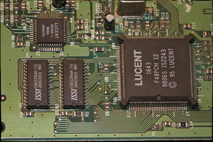

FP2D
Look up foods, plot their nutritional values, and make your diet plan.
This web application was designed for Professor Nakamura of the Department of Food Science and Human Nutrition in order to help clients keep track of food intake to maintain a healthy lifestyle.
Ruby
HTML
JavaScript
CSS
jQuery
jqPlot
Bootstrap

Catmull-Clark Subdivision algorithm.
An OpenGL version of the Catmull-Clark Subdivision algorithm.
C++
OpenGL

Focus Stacking
A focal stacking algorithm which takes multiple images with differing depth of field and creates a composite in which the entire image is in focus.
MATLAB
Chess
A fully functional chess program where 2 players can play either on the same screen or through a network connection.
Java